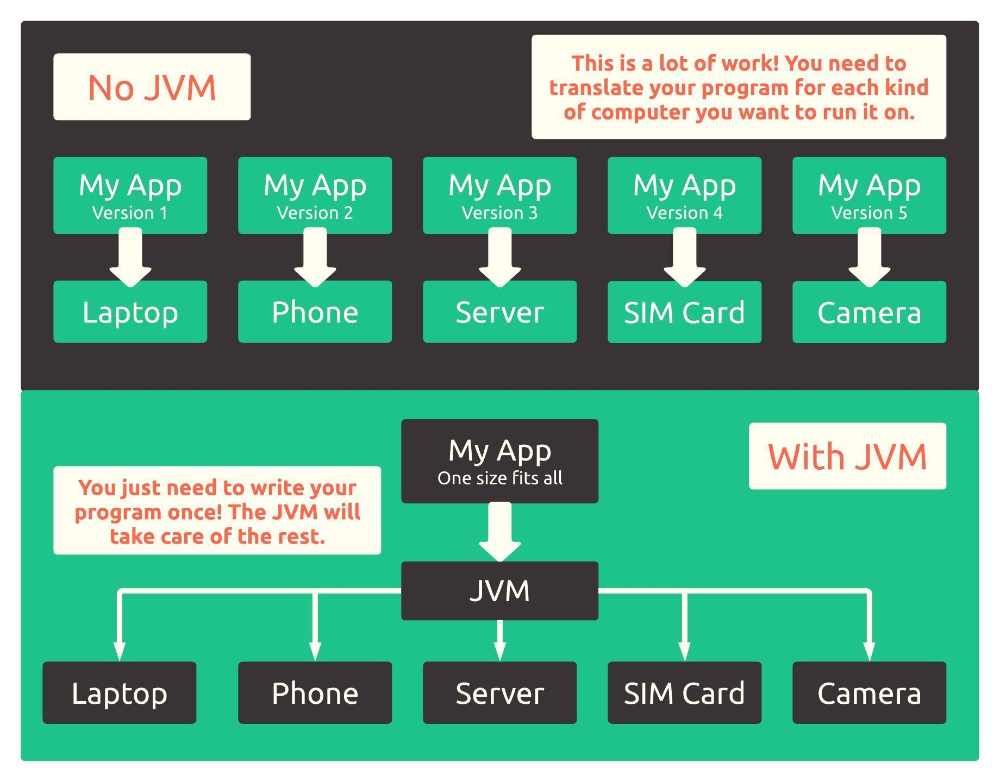

3.2. The Java Virtual Machine¶
Back in the day, we had a problem. There were a lot of companies that made all kinds of computers, all with different processors. What’s a processor? It’s a piece of silicon inside of your computer that looks like this:

You can think of it as the brain of your computer! Processors make sense of programs, just like human brains make sense of things like language and mathematics. And much like human brains in the world, processors could only make sense of information that was presented to them in the languages they knew.
This language barrier was really hard for engineers because they ultimately wanted to write programs that could be run on all kinds of devices without worrying about the type of processor found below.
One day, a little company called Sun Microsystems decided to fix this problem by creating a translator of sorts for the processors of the world. This translator could make a single program run on any processor because it essentially translated it into the appropriate language first 1. It was a revolutionary idea that not only made it possible to run a single program on a variety of devices, it also made writing great programs easier because it essentially handled all of the tricky stuff engineers hated thinking about by itself.
Anywho, our CS translator is called the Java Virtual Machine, or the JVM for short. The JVM converts any program written in Java into the language that a specific processor needs. Here’s a diagram that illustrates how the JVM acts as a bridge between Java programs and the processor:
{kind=link}
As you can see, the JVM can save us a lot of time and energy! But what does this translation step actually look like? And how does this effect the programs we write in Java? Keep reading to find out. :)
- 1
In fact, the slogan for Java was, “Write once, run anywhere.”